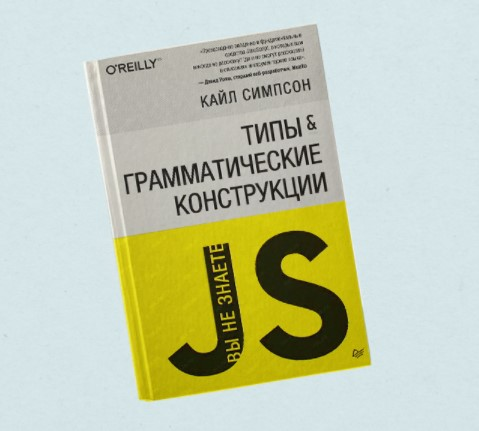
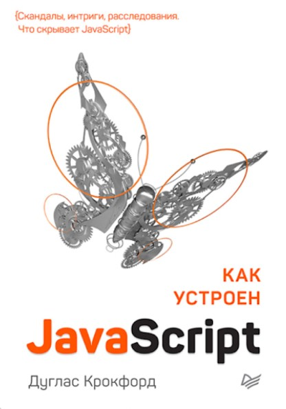

Підбірка книг для Front-End розробників
-
Для новачків
- «{Ви не знаєте JS} Типи та граматичні конструкції»
- «Як влаштований JavaScript»
- «Секрети CSS. Ідеальні розв'язки щоденних завдань»
З книжок для розробників-початківців я, мабуть, можу порадити лише одну (хоча насправді це серія книг) — «Ви не знаєте JS» Кайла Сімпсона. Вона описує всі тонкощі, найкращі практики та особливості мови. Спочатку книга випускалася на GitHub, у відкритому доступі — там навіть є російський переклад. Однак зараз книгу можна і купити у друкованому вигляді.

Усі розділи починаються з «Як працює…» У принципі, це найкоротше пояснення того, що на вас чекає в книзі. Здається, що розуміється взагалі все, що є в мові.

-
Для профі
- «Патерни об'єктно-орієнтованого проектування»
- «Чистая архитектура»
Це вже серйозніші джерела — їх я рекомендую тим, хто вже писав у прод, набрався досвіду і готовий розвиватися далі. Відмінна книга з розробки від «чотирьох банди». Коли починаєш замислюватися про архітектуру та вибір патернів, що підходять для виконання тих чи інших завдань, це перше, що необхідно вивчити.